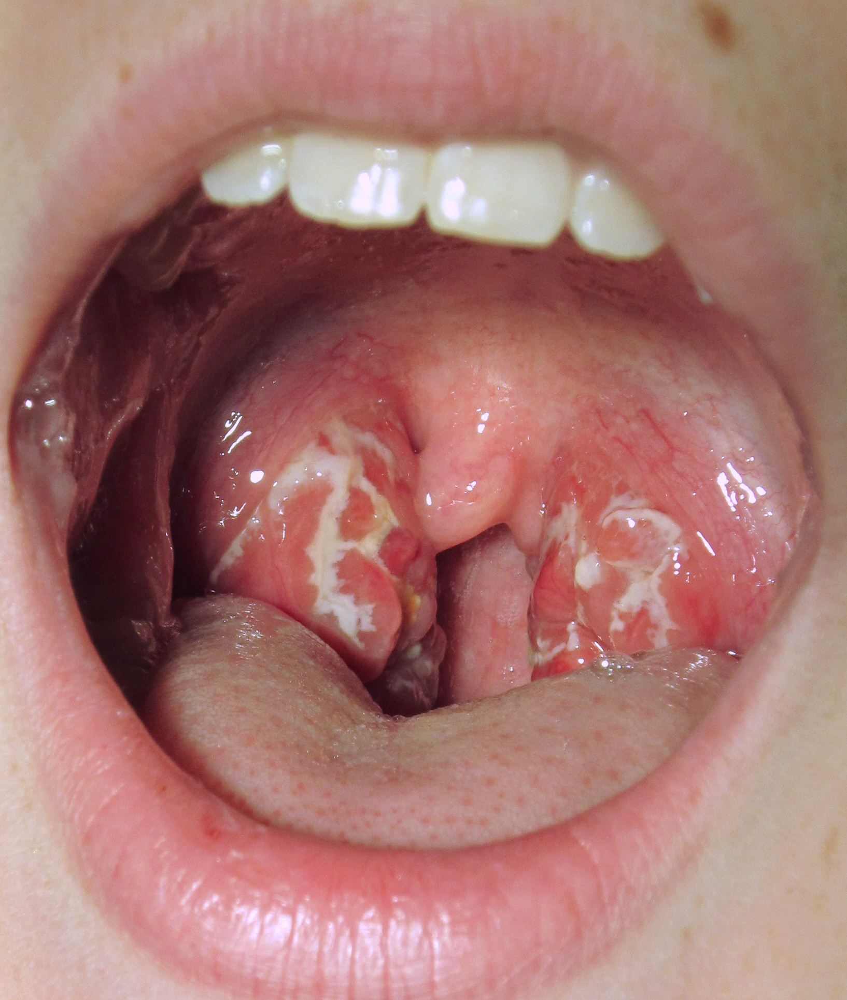
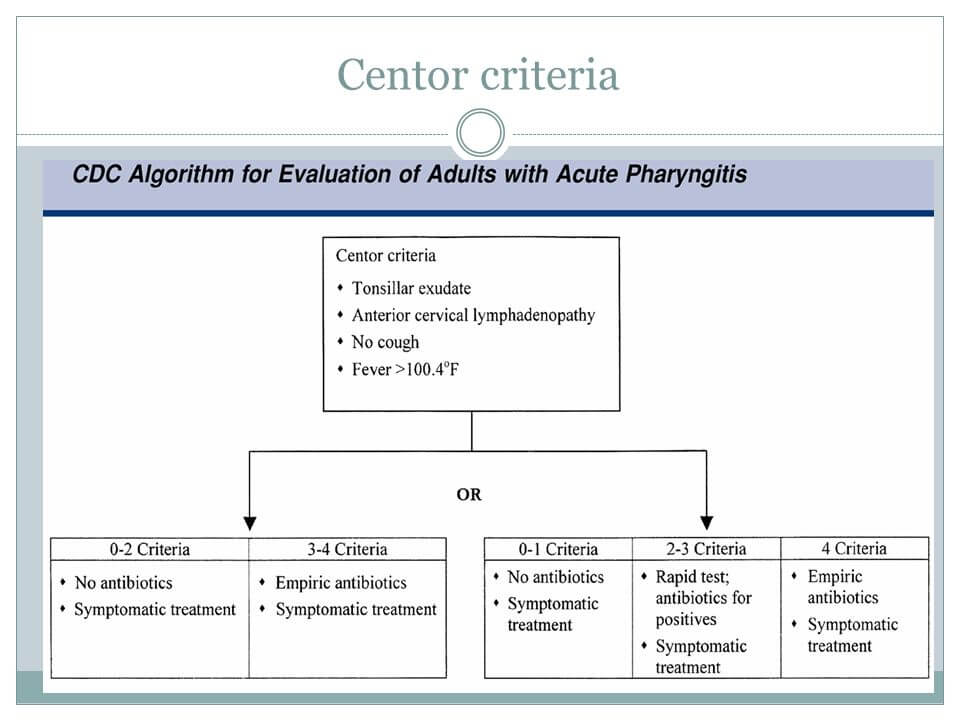
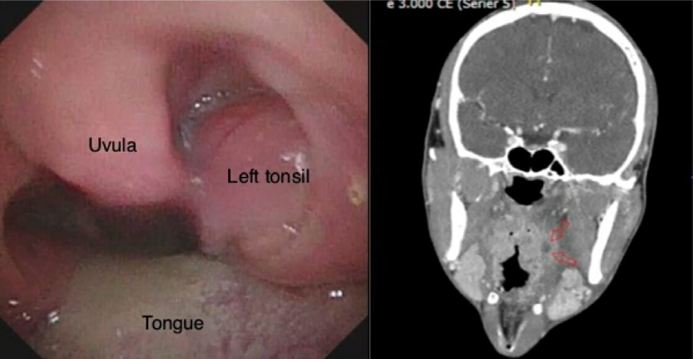
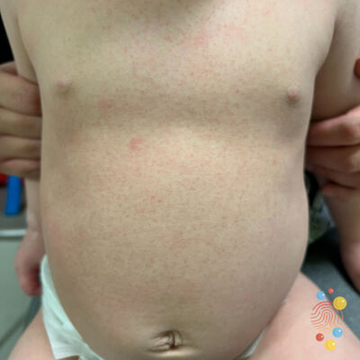
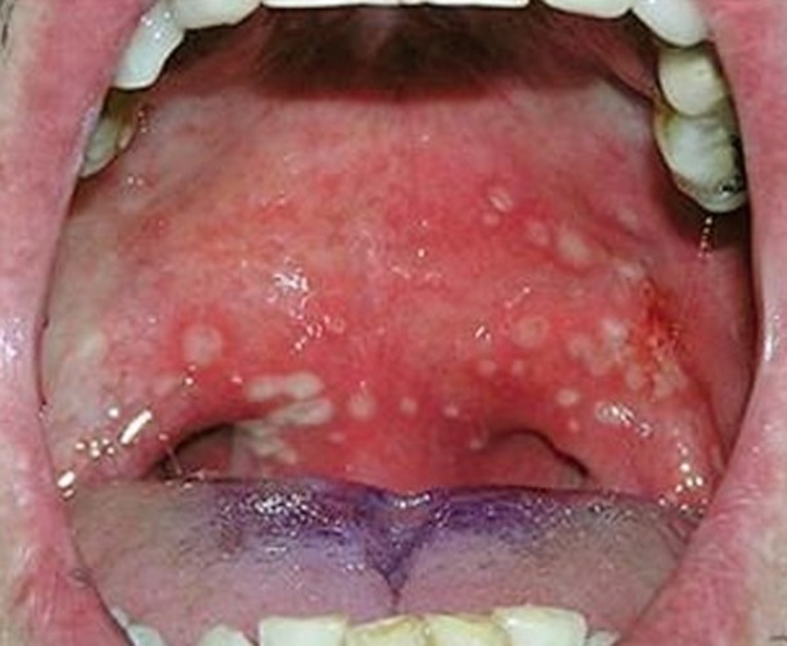
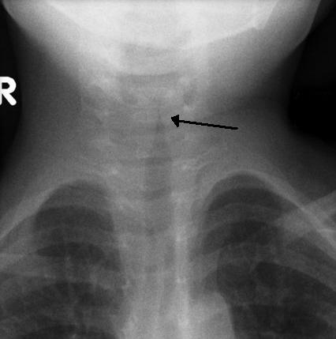
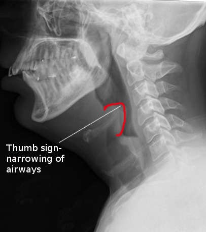
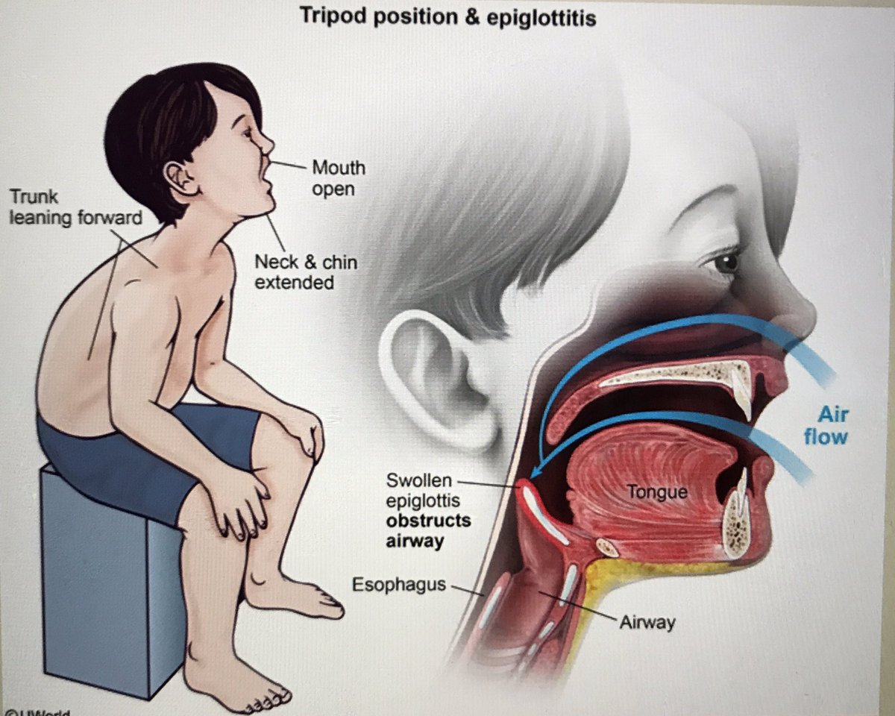
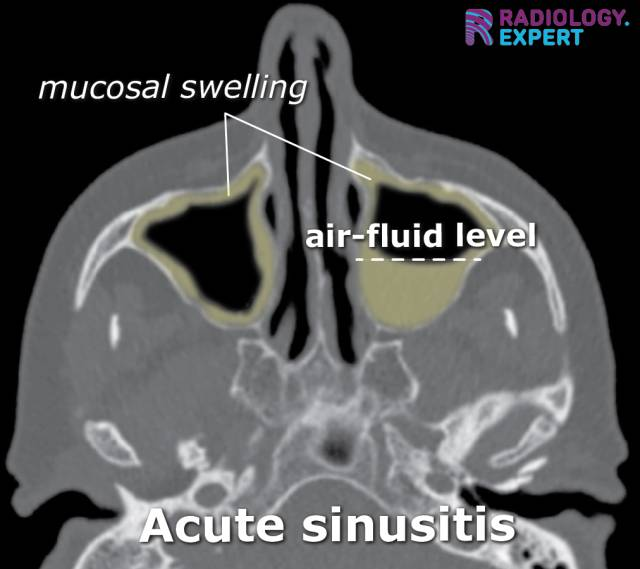
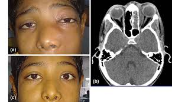

Infecțiile Acute ale Căilor Respiratorii Superioare
Faringite și angine · Scorul Centor/McIsaac · Laringita și epiglotita · Crupul · Rinosinuzite acute · Complicații
Faringita acută este cel mai frecvent motiv de consultație în medicină de familie. Peste 50% din copii primesc antibiotice pentru faringită, deși etiologia este virală în 60-80% din cazuri. Scorul Centor/McIsaac este instrumentul validat care reduce prescrierea inutilă de antibiotice cu până la 40%. Ca medic de familie, vei decide zilnic: „Are nevoie de antibiotic sau nu?" — iar răspunsul corect depinde de capacitatea ta de a diferenția rapid etiologia virală de cea streptococică. Epiglotita și abcesul periamigdalian sunt urgențe vitale care se pot prezenta inițial ca „durere în gât" banală.
Faringite și angine acute — Generalități
Faringitele și anginele acute sunt infecții ale orofaringelui și amigdalelor palatine, caracterizate prin febră, sindrom faringian inflamator (eritem, edem, exsudat), disfagie și odinofagie. Sunt importante prin frecvența mare, dificultatea diagnosticului etiologic și complicațiile locale sau sistemice.
Terminologie: faringita = inflamația orofaringelui (de la pilierii anteriori la peretele posterior al faringelui); angina (faringoamigdalita) = inflamația orofaringelui ȘI amigdalelor palatine; amigdalita = inflamația predominantă a amigdalelor.
Etiologia se corelează cu aspectul clinic:
Etiologia faringitelor și anginelor în funcție de aspect clinic
| Forma clinică | Etiologie principală |
|---|---|
| Eritematos (cea mai frecventă) | Virusuri 60-80% (rinovirusuri, coronavirusuri, adenovirusuri, influenza, EBV, CMV, HIV); SBHGA 10-40% |
| Eritemato-pultacee | SBHGA (aproape mereu); depozite pultacee alb-gălbui în criptele amigdaliene |
| Pseudomembranoasă | C. diphtheriae (difterie); EBV (mononucleoză); pseudomembrane alb-cenușii aderente |
| Veziculoasă | Coxsackie A (herpangină); HSV (angina herpetică — primoinfecție) |
| Ulceroasă / ulceronecrotică | Fusobacterium + Borrelia (angina Plaut-Vincent); T. pallidum (șancrul sifilitic); TBC |
Epidemiologie: Sezon rece (iarnă-primăvară). Toate vârstele, frecvență maximă la copii și adolescenți. Transmitere aerogenă, contact direct. Pot apărea focare în colectivități școlare.

- Ce observi: amigdale palatine hipertrofice, intens eritematoase, cu depozite pultacee alb-gălbui abundente dispuse în criptele amigdaliene. Uvula eritematoasă, edematoasă. Mucoasa faringiană posterior intens hiperemică.
- Ce observi: amigdale palatine hipertrofice, intens eritematoase, cu depozite pultacee alb-gălbui abundente dispuse în criptele amigdaliene. Uvula eritematoasă, edematoasă. Mucoasa faringiană posterior intens hiperemică.
- Ce sugerează: aspect tipic de faringoamigdalită eritemato-pultacee, sugestiv pentru etiologie cu streptococ beta-hemolitic grup A. Depozitele se detașează ușor (spre deosebire de pseudomembranele difterice care aderă și sângerează la detașare).
- Diferențial vizual: mononucleoza infecțioasă poate mima acest aspect (pseudomembrane mai extinse, hepatosplenomegalie, limfomonocitară); difteria produce membrane gri-cenușii aderente care depășesc amigdalele.
Semnele clinice nu pot diferenția cu certitudine etiologia virală de cea bacteriană — aceasta este cauza principală a supraprescrierii. Debutul brusc, febra înaltă, odinofagia severă și adenopatia submandibulară sugerează etiologie streptococică, dar nu o confirmă. Debutul insidios, rinoreea, tusea și conjunctivita sugerează etiologie virală. Scorul Centor/McIsaac a fost conceput tocmai pentru a reduce această incertitudine și a ghida decizia de testare/tratare pe baze obiective.
Scorul Centor / McIsaac — Decizia de antibioterapie
Scorul Centor, modificat de McIsaac, este instrumentul validat pentru estimarea probabilității faringitei streptococice și ghidarea deciziei de testare/tratare. A fost conceput pentru a reduce prescrierea inutilă de antibiotice.
Cele 5 criterii (câte 1 punct fiecare):
Scorul Centor / McIsaac modificat
| Criteriu | Puncte |
|---|---|
| Febră >38°C (sau anamneză de febră) | +1 |
| Absența tusei | +1 |
| Exsudat sau tumefiere amigdaliană | +1 |
| Adenopatie cervicală anterioară dureroasă | +1 |
| Vârsta 3-14 ani | +1 |
| Vârsta 15-44 ani | 0 |
| Vârsta ≥45 ani | −1 |

Această diagramă prezintă algoritmul CDC de decizie bazat pe criteriile Centor. Relevanță practică: algoritmul bifurcă în două abordări — una simplificată (0-2 criterii = fără antibiotice, 3-4 = antibiotice empirice) și una gradată care integrează testul rapid de detecție antigenică (RADT). Abordarea gradată este recomandată de IDSA: la scor 2-3, testezi cu RADT înainte de a prescrie; la scor ≥4, poți trata empiric. Capcana: chiar la scor maxim (4-5), probabilitatea de infecție cu SBHGA este de doar 51-53% — aproape jumătate din pacienți cu „scor maxim" au de fapt infecție virală!" data-sursa="https://emedicine.medscape.com/article/232330-overview#showall#showall">Această diagramă prezintă algoritmul CDC de decizie bazat pe criteriile Centor. Relevanță practică: algoritmul bifurcă în două abordări — una simplificată (0-2 criterii = fără antibiotice, 3-4 = antibiotice empirice) și una gradată care integrează testul rapid de detecție antigenică (RADT)....
Această diagramă prezintă algoritmul CDC de decizie bazat pe criteriile Centor. Relevanță practică: algoritmul bifurcă în două abordări — una simplificată (0-2 criterii = fără antibiotice, 3-4 = antibiotice empirice) și una gradată care integrează testul rapid de detecție antigenică (RADT). Abordarea gradată este recomandată de IDSA: la scor 2-3, testezi cu RADT înainte de a prescrie; la scor ≥4, poți trata empiric. Capcana: chiar la scor maxim (4-5), probabilitatea de infecție cu SBHGA este de doar 51-53% — aproape jumătate din pacienți cu „scor maxim" au de fapt infecție virală!
Conduita în funcție de scor:
- Scor 0-1: Probabilitate SBHGA <10%. NU administra antibiotice. Tratament simptomatic.
- Scor 2-3: Probabilitate SBHGA 11-35%. Efectuează test rapid (RADT) și/sau cultură faringiană. Tratează cu antibiotice DOAR dacă testul e pozitiv.
- Scor ≥4: Probabilitate SBHGA 51-53%. Antibioterapie empirică sau testare + tratare dacă pozitiv. Chiar și la scor maxim, probabilitatea depășește doar puțin 50%!
Tratamentul faringitei streptococice: - Prima linie: Penicilina V 500 mg × 2-3/zi p.o., 10 zile (sau Amoxicilină 50 mg/kg/zi la copii) - Alternativă (alergie la penicilină): Azitromicină 500 mg ziua 1, apoi 250 mg/zi × 4 zile; sau Claritromicină 250 mg × 2/zi × 10 zile - Alergie severă (anafilaxie): Clindamicină 300 mg × 3/zi × 10 zile
De ce 10 zile? Durata de 10 zile este necesară pentru eradicarea SBHGA din faringele și prevenirea complicațiilor post-streptococice (RAA, GNA), NU pentru vindecarea simptomelor (care se ameliorează în 3-5 zile). Întreruperea prematură nu previne complicațiile.
Calculator Centor / McIsaac
B) GREȘIT — Scorul de 5 este corect, dar Azitromicina 3 zile NU este prima linie. Prima linie = Penicilina V sau Amoxicilină × 10 zile. Azitromicina se folosește doar la alergici la penicilină, iar schema e de 5 zile (nu 3).
C) GREȘIT — Scorul nu este 3. Calculul corect: febră >38°C (+1), absența tusei (+1), exsudat amigdalian (+1), adenopatie cervicală anterioară (+1), vârsta 3-14 ani (+1) = 5 puncte. La scor 5, tratamentul simptomatic singur este insuficient.
D) GREȘIT — Scorul este 5, nu 2. La scor ≥4 nu este necesară așteptarea culturii (24-48h) — se inițiază antibioterapia empiric.
C) GREȘIT — Amoxicilina empirică la scor 2 cu tablou viral = supraprescriere. Aceasta este exact greșeala pe care scorul Centor a fost conceput să o prevină.
D) GREȘIT — Azitromicina nu este indicată la scor 2 cu semne virale. Prescrierea de macrolide „de siguranță" la faringite virale contribuie la rezistența antimicrobiană.
E) GREȘIT — Testul rapid nu este „de urgență" la un scor 2 cu tablou clar viral. Poate fi efectuat dacă medicul are dubii, dar nu este o urgență.
Complicații ale faringitei streptococice
Complicațiile faringitei streptococice se împart în supurative locale (extensia directă a infecției) și non-supurative / post-streptococice (mediate imunologic, apar la distanță).
Complicații supurative locale: - Abcesul periamigdalian (flegmonul periamigdalian) — cea mai frecventă complicație supurativă. Odinofagie unilaterală extremă, trismus (dificultate la deschiderea gurii), voce „de cartofi fierbinți" (hot potato voice), uvula deviată controlateral, bombarea pilierului anterior. Urgență ORL — necesită drenaj + antibioterapie (Amoxicilină/Clavulanat sau Clindamicină). - Abcesul retrofaringian — mai frecvent la copii <5 ani. Febră, rigiditate cervicală, disfagie, stridor. Risc de mediastinită descendentă. - Adenoflegmonul cervical — extensia infecției la spațiile cervicale profunde.

- Ce observi (stânga): imagine endoscopică a orofaringelui cu bombarea și edemul important al pilierului amigdalian stâng, deplasarea uvulei spre dreapta (contralateral), amigdala stângă împinsă medial de colecția purulentă periamigdaliană. Limba (jos) și uvula sunt etichetate.
- Ce observi (stânga): imagine endoscopică a orofaringelui cu bombarea și edemul important al pilierului amigdalian stâng, deplasarea uvulei spre dreapta (contralateral), amigdala stângă împinsă medial de colecția purulentă periamigdaliană. Limba (jos) și uvula sunt etichetate.
- Ce observi (dreapta): secțiune CT coronală cu colecție hipodensă periamigdaliană stângă (abces), cu captare de contrast periferică (inel), deplasând structurile mediane.
- Semne clinice cardinale: trismus (dificultate la deschiderea gurii), odinofagie unilaterală extremă, voce „de cartofi fierbinți", uvula deviată. Necesită drenaj chirurgical urgent + antibioterapie parenterală.
Complicații non-supurative (post-streptococice): - Reumatismul articular acut (RAA) — apare la 2-4 săptămâni post-faringită streptococică netratată. Cardita, poliartrita migratorie, coreea, nodulii subcutanați, eritemul marginat. Prevenția primară = tratamentul complet (10 zile) al faringitei streptococice. - Glomerulonefrita acută poststreptococică (GNA) — apare la 1-3 săptămâni post-infecție. Hematurie, edeme, HTA, proteinurie. NU este prevenită de tratamentul antibiotic al faringitei (spre deosebire de RAA). - Scarlatina — SBHGA producător de exotoxine pirogene → exantem difuz micropapular („hârtie de șmirghel"), limba zmeurie, paloare periorală (triunghiul Filatov). Descuamarea în lambouri la nivelul palmelor apare în convalescență.

- Ce observi: exantem difuz micropapular pe trunchiul unui copil, cu aspect fin, „ca hârtia de șmirghel" la palpare. Erupția este discretă vizual (ușor eritematoasă, vizibilă mai ales la lumină tangențială) dar palpabilă — textura aspră este semnul clinic cardinal.
- Ce observi: exantem difuz micropapular pe trunchiul unui copil, cu aspect fin, „ca hârtia de șmirghel" la palpare. Erupția este discretă vizual (ușor eritematoasă, vizibilă mai ales la lumină tangențială) dar palpabilă — textura aspră este semnul clinic cardinal.
- Ce sugerează: scarlatină — exantem produs de exotoxinele pirogene ale SBHGA. Debutează pe gât/torace, se generalizează în 24-48h, accentuat în pliurile de flexie (semnul Pastia — linii eritematoase persistente în pliuri).
- Diferențial vizual: spre deosebire de rujeolă (macule confluente, debut retroauricular) sau rubeolă (macule discrete, adenopatie retroauriculară), exantemul scarlatinos este micropapular palpabil și se însoțește de angina eritemato-pultacee + limba zmeurie.
Odinofagie unilaterală extremă + trismus (dificultate la deschiderea gurii) + voce „de cartofi fierbinți" + uvula deviată = abces periamigdalian până la proba contrarie. Nu trata doar cu antibiotice orale! Necesită drenaj chirurgical (aspirație cu ac sau incizie) + antibioterapie parenterală. Fără drenaj, riscul de extensie la spațiile cervicale profunde și mediastinită este real.
Angine cu forme clinice particulare
Herpangina (Coxsackie A): Copii 1-7 ani, vară, mici epidemii. Febră moderată, faringe intens hiperemic cu vezicule mici pe palatul posterior care se erodează rapid, lăsând ulcerații superficiale acoperite de un depozit gălbui înconjurat de halou inflamator. Evoluție autolimitată 5-7 zile. Nu necesită antibiotic.

- Ce observi: multiple leziuni alb-gălbui (ulcerații post-veziculare) diseminate pe palatul moale, pilierii amigdalieni și peretele posterior al faringelui. Fiecare leziune este înconjurată de un halou eritamatos. Mucoasa din jur este difuz hiperemică.
- Ce observi: multiple leziuni alb-gălbui (ulcerații post-veziculare) diseminate pe palatul moale, pilierii amigdalieni și peretele posterior al faringelui. Fiecare leziune este înconjurată de un halou eritamatos. Mucoasa din jur este difuz hiperemică.
- Ce sugerează: herpangină — infecție cu Coxsackie A. Localizarea pe palatul posterior este elementul cheie de diferențiere față de gingivostomatita herpetică (HSV), care afectează mucoasa anterioară și buzele.
- Diferențial vizual: stomatita aftoasă produce ulcerații similare dar fără febră și fără epidemiologie de vârf estival; boala mâini-picioare-gură (Coxsackie A16) asociază vezicule palmare și plantare.
Angina herpetică (HSV — primoinfecție, 30% din cazuri): Febră înaltă, vezicule dureroase pe mucoasa bucală anterioară cu extensie la buze (spre deosebire de herpangină care afectează palatul posterior). Gingivostomatită severă, sialoreea, inapetență. La adult, se recomandă Aciclovir dacă debutul este <72h.
Angina Plaut-Vincent (fusospirilar): Asociere Fusobacterium necrophorum + Borrelia vincentii. Febră moderată, halena fetidă (mirosul este primul indiciu!), odinofagie unilaterală. Ulcerație amigdaliană unilaterală, profundă, relativ suplă la atingere, acoperită cu depozite cenușii. Adenopatie satelită dureroasă unilateral. Tratament: Penicilina V sau Metronidazol.
Herpangina (Coxsackie A)
- Vârstă: copii 1-7 ani
- Sezon: vară
- Localizare: palat POSTERIOR, pilierii amigdalieni
- Leziuni: vezicule mici → ulcerații cu halou
- Adenopatie: moderată
- Evoluție: autolimitată 5-7 zile
- Tratament: simptomatic
Angina herpetică (HSV)
- Orice vârstă (primoinfecție)
- Fără sezonalitate
- Mucoasă ANTERIOARĂ, buze, gingivii
- Vezicule grupate → ulcerații confluente, gingivostomatită
- Submandibulară importantă
- 7-14 zile, mai severă
- Aciclovir (dacă debut <72h)
Laringita, crupul și epiglotita
Laringita acută se manifestă prin răgușeală (până la afonie), în contextul unei infecții virale de căi respiratorii superioare (adenovirusuri, gripale, paragripale, coronavirusuri). Evoluție benignă, tratament simptomatic.
Crupul (laringotraheita acută) este o urgență pediatrică frecventă, definită prin triada: tuse lătrătoare (seal bark cough), stridor inspirator și răgușeală. Afectează predominant copii între 3 luni și 3 ani (incidență ușor mai mare la băieți, sezon rece). Etiologia este majoritar virală: virus parainfluenza 1 (cel mai frecvent), virus gripal, VSR, adenovirusuri.
Clasificarea severității crupului (scorul Westley modificat): - Ușor: tuse rară lătrătoare, fără stridor în repaus, tiraj minimal - Moderat: tuse lătrătoare frecventă, stridor audibil în repaus, tiraj costal moderat, fără agitație - Sever: stridor inspirator și expirator, tiraj marcat, agitație severă → terapie intensivă
Tratament crup: aer umed și rece, Dexametazonă 0,6 mg/kg p.o./i.m. (doză unică — eficacitate dovedită), Epinefrină racemică nebulizată (în formele moderate-severe, efect rapid dar scurt — 2h), oxigenoterapie dacă SpO₂ <92%.

- Ce observi: radiografie toracică AP la un copil. Săgeata indică îngustarea simetrică a coloanei de aer la nivel subglotic, cu aspect de vârf de creion sau turnul unei biserici — semnul steeple (steeple sign sau semnul clopotului).
- Ce observi: radiografie toracică AP la un copil. Săgeata indică îngustarea simetrică a coloanei de aer la nivel subglotic, cu aspect de vârf de creion sau turnul unei biserici — semnul steeple (steeple sign sau semnul clopotului).
- Ce sugerează: edem subglotic bilateral simetric, caracteristic pentru crup (laringotraheită acută). Îngustarea este la nivel subglotic (sub corzile vocale), spre deosebire de epiglotită unde tumefacția este supraglotică.
- Diferențial vizual: în epiglotită, radiografia laterală de gât arată „semnul degetului mare" (thumb sign) — epiglota tumefiat, rotunjită. În crup, semnul este pe incidență AP, nu laterală.
Epiglotita acută este o urgență vitală — inflamație rapidă a epiglotei cu risc de obstrucție completă a căilor aeriene. Etiologie: Haemophilus influenzae tip b (Hib) — majoritar, dar și streptococi, stafilococi, pneumococi. Incidența a scăzut dramatic după vaccinarea anti-Hib.

- Ce observi: radiografie laterală de gât. Cercul roșu evidențiază epiglota semnificativ tumefiat, cu aspect rotunjit care amintește de un deget mare (thumb sign). Coloana de aer hipofaringiană este îngustată.
- Ce observi: radiografie laterală de gât. Cercul roșu evidențiază epiglota semnificativ tumefiat, cu aspect rotunjit care amintește de un deget mare (thumb sign). Coloana de aer hipofaringiană este îngustată.
- Ce sugerează: epiglotită acută — tumefacție severă a epiglotei care compromite permeabilitatea căii aeriene supraglotice. Aceasta este o urgență vitală.
- Atenție: radiografia laterală de gât poate confirma diagnosticul, dar NU trebuie să întârzie managementul căii aeriene! Dacă pacientul este instabil clinic, se asigură mai întâi calea aeriană.

Diagrama ilustrează poziția tripod caracteristică epiglotitei: copilul stă așezat, aplecat anterior, cu gura deschisă, gâtul și bărbia în extensie (sniffing position). În detaliu se observă epiglota tumefiat care obstruează fluxul de aer. Relevanță clinică: această poziție optimizează deschiderea căii aeriene supraglotice. NU culca copilul pe spate (crește riscul de obstrucție completă!). NU examina faringele cu apăsătorul de limbă (poate precipita laringospasmul!). Examinarea se face DOAR cu laringoscop, în condiții de securizare a căii aeriene." data-sursa="https://images.unsplash.com/image-from-cdc-phil-respiratory-distress">Diagrama ilustrează poziția tripod caracteristică epiglotitei: copilul stă așezat, aplecat anterior, cu gura deschisă, gâtul și bărbia în extensie (sniffing position). În detaliu se observă epiglota tumefiat care obstruează fluxul de aer....
Diagrama ilustrează poziția tripod caracteristică epiglotitei: copilul stă așezat, aplecat anterior, cu gura deschisă, gâtul și bărbia în extensie (sniffing position). În detaliu se observă epiglota tumefiat care obstruează fluxul de aer. Relevanță clinică: această poziție optimizează deschiderea căii aeriene supraglotice. NU culca copilul pe spate (crește riscul de obstrucție completă!). NU examina faringele cu apăsătorul de limbă (poate precipita laringospasmul!). Examinarea se face DOAR cu laringoscop, în condiții de securizare a căii aeriene.
La un copil cu febră înaltă, stridor, disfagie, sialoreea și poziție tripod (aplecat anterior, gura deschisă, gâtul extins): NU apăsa pe limbă! Apăsarea poate declanșa laringospasm și obstrucție completă fatală. Examinarea directă a epiglotei se face DOAR cu laringoscop, de echipa de ATI/ORL, în condiții de securizare a căii aeriene. Tratament: antibioterapie i.v. (Ceftriaxonă) + asigurarea căii aeriene (intubație sau traheotomie dacă e necesar).
Crupul afectează copiii mici deoarece la această vârstă subglota are diametrul cel mai mic al întregii căi aeriene — doar 4mm. Un milimetru de edem mucos reduce secțiunea cu ~60% la copil (vs. ~20% la adult). De aceea, aceeași virusă care produce la adult doar o „răgușeală" produce la copilul de 2 ani stridor sever. Epiglotita era cauzată predominant de H. influenzae tip b — vaccinarea anti-Hib a redus incidența cu >99%. Astăzi, epiglotita la copilul vaccinat este extrem de rară.
Rinosinuzitele acute
Rinosinuzitele acute sunt inflamații ale mucoasei sinusurilor paranazale cu durată <4 săptămâni. Peste 90% sunt virale (autolimitate în 7-10 zile) și nu necesită antibiotice. Doar 0,5-2% din rinosinuzitele virale se complică cu suprainfecție bacteriană.
Etiologie bacteriană: S. pneumoniae (20-40%), H. influenzae (20-35%, 92% producător de betalactamază!), M. catarrhalis (2-10%), S. aureus (0-9%).
Diagnosticul de rinosinuzită acută bacteriană se pune clinic — criteriul temporal este esențial: - Simptome care nu se ameliorează după 10 zile (rinoree mucopurulentă, obstrucție nazală, durere facială) - SAU agravare după ziua 5-7 (double worsening — ameliorare inițială urmată de agravare) - SAU debut cu febră înaltă (≥39°C) + rinoree purulentă + durere facială ≥3 zile consecutive

- Ce observi: secțiune CT axială a sinusurilor paranazale. Se evidențiază îngroșarea mucoasei (mucosal swelling) a sinusului maxilar drept cu nivel hidro-aeric (air-fluid level) — linie orizontală clară între aer (negru, superior) și lichid (gri, inferior).
- Ce observi: secțiune CT axială a sinusurilor paranazale. Se evidențiază îngroșarea mucoasei (mucosal swelling) a sinusului maxilar drept cu nivel hidro-aeric (air-fluid level) — linie orizontală clară între aer (negru, superior) și lichid (gri, inferior).
- Ce sugerează: rinosinuzită acută cu colecție lichidiană intrasinusală. Nivelul hidro-aeric este un semn clasic de sinuzită acută cu conținut purulent.
- Atenție: CT-ul sinusurilor nu este necesar pentru diagnosticul rinosinuzitei acute necomplicate (diagnosticul este clinic!). Se indică doar în: suspiciune de complicații (orbitare, endocraniene), eșec terapeutic, rinosinuzite recurente sau candidați chirurgicali.
Tratament: Amoxicilină/Clavulanat prima linie (500/125 mg × 3/zi sau 875/125 mg × 2/zi), 10-14 zile. Alternative: Cefuroxim, Cefpodoxim. La eșec terapeutic: chinolone respiratorii (Moxifloxacin, Levofloxacin). Asociat: decongestionante nazale topice (max 5 zile!), lavaj nazal cu ser fiziologic, AINS.
Complicații — rare dar potențial fatale:

- Ce observi (stânga): fotografie clinică a unui copil cu edem periorbitar marcat, eritem și proeminența globului ocular stâng (proptoză). Sus: aspect la prezentare. Jos: ameliorare sub tratament.
- Ce observi (stânga): fotografie clinică a unui copil cu edem periorbitar marcat, eritem și proeminența globului ocular stâng (proptoză). Sus: aspect la prezentare. Jos: ameliorare sub tratament.
- Ce observi (dreapta): secțiune CT axială orbitară evidențiind inflamația țesuturilor moi periorbitar, cu opacifiere a sinusului etmoidal adiacent (sursa infecției).
- Semne de alarmă pentru celulita orbitară: edem periorbitar progresiv, proptoză (proeminența globului ocular), durere la mișcările oculare, diplopie, scăderea acuității vizuale. Urgență — necesită antibioterapie i.v. ± drenaj chirurgical (FESS). Fără tratament → abces orbital → pierderea vederii sau extensie endocraniană.
C) GREȘIT — CT-ul sinusurilor nu este indicat în rinosinuzita acută necomplicată. Diagnosticul este clinic. CT-ul se indică doar la suspiciune de complicații sau eșec terapeutic.
D) GREȘIT — Cultura din secreția nazală nu este investigație de rutină în rinosinuzita acută comunitară. Bacteriologia din tampanamentul nazal reflectă flora nazofaringiană, nu neapărat agentul etiologic sinusal (care necesită punctie sinusală pentru recoltare fiabilă).
E) GREȘIT — Moxifloxacinul (chinolona respiratorie) este rezervat pentru eșecul terapeutic cu Amoxicilină/Clavulanat sau alergie la betalactamide. Nu este prima linie și NU se prescrie la ziua 5 fără indicație clară de suprainfecție bacteriană.
Penicilina V 500 mg × 2-3/zi p.o. × 10 zile (sau Amoxicilină 50 mg/kg/zi la copii). Durata de 10 zile este necesară pentru prevenirea RAA, nu doar pentru vindecarea simptomelor. La alergici: Azitromicină sau Claritromicină.
Localizarea leziunilor: Herpangina (Coxsackie A) = vezicule pe palatul posterior și pilierii amigdalieni. Angina herpetică (HSV) = vezicule pe mucoasa anterioară, gingivii și buze. Herpangina apare vara la copii mici; angina herpetică nu are sezonalitate.
Simptome care nu se ameliorează >10 zile, SAU agravare la ziua 5-7 (double worsening), SAU debut cu febră ≥39°C + rinoree purulentă + durere facială ≥3 zile. Majoritatea (>90%) sunt virale și se rezolvă spontan.
Apăsarea pe limbă poate precipita laringospasmul și obstrucție completă fatală a căii aeriene. Copilul cu febră + stridor + poziție tripod trebuie examinat DOAR cu laringoscop de echipa ATI/ORL. NU culca copilul pe spate, NU forța examinarea faringelui.
Tratamentul cu Penicilina V × 10 zile previne reumatismul articular acut (RAA) dar NU previne glomerulonefrita acută (GNA). RAA apare la 2-4 săptămâni prin mimetism molecular (anticorpi anti-proteina M cross-reactivi cu proteinele cardiace). GNA este mediată de complexe imune care se formează indiferent de tratament.
Epiglotită acută — epiglota tumefiat apare rotunjită, opacă, asemănătoare unui deget mare (thumb sign) pe radiografia laterală de gât. Spre deosebire de crup (laringotraheită), unde semnul radiologic este pe incidență AP: semnul steeple (îngustarea subglotică simetrică, aspect de turn de biserică).
Copilul cu „durere în gât" — Cât de simplu e?
Ești medic de familie. La cabinet se prezintă mama cu Andrei, un băiat de 7 ani, care de aseară „nu vrea să mănânce" și se plânge de durere în gât. A avut febră acasă — mama a măsurat 39,2°C. Nu a tușit. Nu a avut contact cunoscut cu bolnavi.
Examinezi copilul: febră 38,8°C, stare generală relativ bună, fără dispnee. Orofaringe: amigdale palatine hipertrofice gradul II bilateral, cu exsudat pultaceu alb-gălbui abundent în criptele amigdaliene. Adenopatie submandibulară dureroasă bilateral, ganglioni de ~1,5 cm. Nu prezintă rinoree, conjunctivită sau tuse.
B) GREȘIT — Scorul nu este 2. La un copil cu toate cele 5 criterii prezente, scorul este maxim (5 puncte), nu 2.
D) GREȘIT — Scorul nu este 3. Calculul corect: febră >38°C (+1), absența tusei (+1), exsudat amigdalian (+1), adenopatie cervicală anterioară dureroasă (+1), vârstă 3-14 ani (+1) = 5 puncte.
E) GREȘIT — Scor 5 este corect, dar „tratament simptomatic și reevaluare" este inadecvat la un scor ≥4. Se recomandă antibioterapie.
Mama sună la cabinet: „Andrei ia antibioticul de 2 zile, febra a scăzut, mănâncă mai bine, dar a apărut o erupție pe corp — puncte roșii mici, ca hârtia de șmirghel la atingere." La examen (mama trimite poze): exantem difuz micropapular pe trunchi, accentuat în pliurile de flexie, paloare periorală. Limba roșie, cu papile proeminente.
B) GREȘIT — Erupția nu este urticarie (care este pruriginoasă, cu plăci ridicate, evanescente). Oprirea antibioticului la un scor Centor 5 cu scarlatină confirmă exact etiologia streptococică — antibioticul trebuie continuat.
D) GREȘIT — Rujeola debutează retroauricular cu macule confluente (nu micropapule) și are secvență cefalocaudală. Prezintă conjunctivită, coriză, tuse (cele 3C) și petele Koplik. Tabloul nu corespunde.
E) GREȘIT — Rubeola produce macule discrete (nu micropapule palpabile), adenopatie retroauriculară (nu submandibulară) și nu are paloare periorală sau limba zmeurie.
Mama sună alarmată: Andrei a recidivat cu febră 39,5°C, odinofagie severă unilaterală (stângă), „nu poate deschide gura" și „vorbește ciudat" (voce înăbușită). Examinezi copilul: trismus marcat, bombarea pilierului amigdalian anterior stâng, uvula deviată spre dreapta.
B) GREȘIT — Recidiva cu trismus, voce modificată și uvula deviată nu este o simplă recidivă de faringită. Schimbarea antibioticului oral nu rezolvă un abces care necesită drenaj.
D) GREȘIT — Angina Plaut-Vincent produce ulcerație amigdaliană unilaterală cu halena fetidă, dar NU trismus și NU devierea uvulei. Aspectul clinic descris este patognomonic pentru abces periamigdalian.
E) GREȘIT — Difteria produce pseudomembrane gri-cenușii aderente care depășesc amigdalele, dar NU trismus. Difteria este extrem de rară în România datorită vaccinării. Nu corespunde tabloului descris.
Diagnostic final: Faringoamigdalită streptococică (scor McIsaac 5) complicată cu scarlatină, apoi abces periamigdalian stâng.
Lecții cheie: - Scorul Centor/McIsaac 5 = toate criteriile prezente → antibioterapie empirică (Amoxicilină 50 mg/kg/zi × 10 zile) - Scarlatina = faringită streptococică + exantem micropapular → se continuă același antibiotic, NU se schimbă sau oprește - Trismus + odinofagie unilaterală + uvula deviată = abces periamigdalian = urgență ORL (drenaj + ATB parenterală) - Rolul MF: recunoașterea complicațiilor supurative care depășesc capacitatea de management în ambulator → transfer urgent la ORL